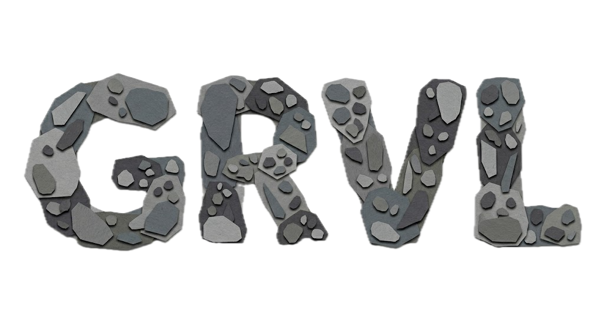
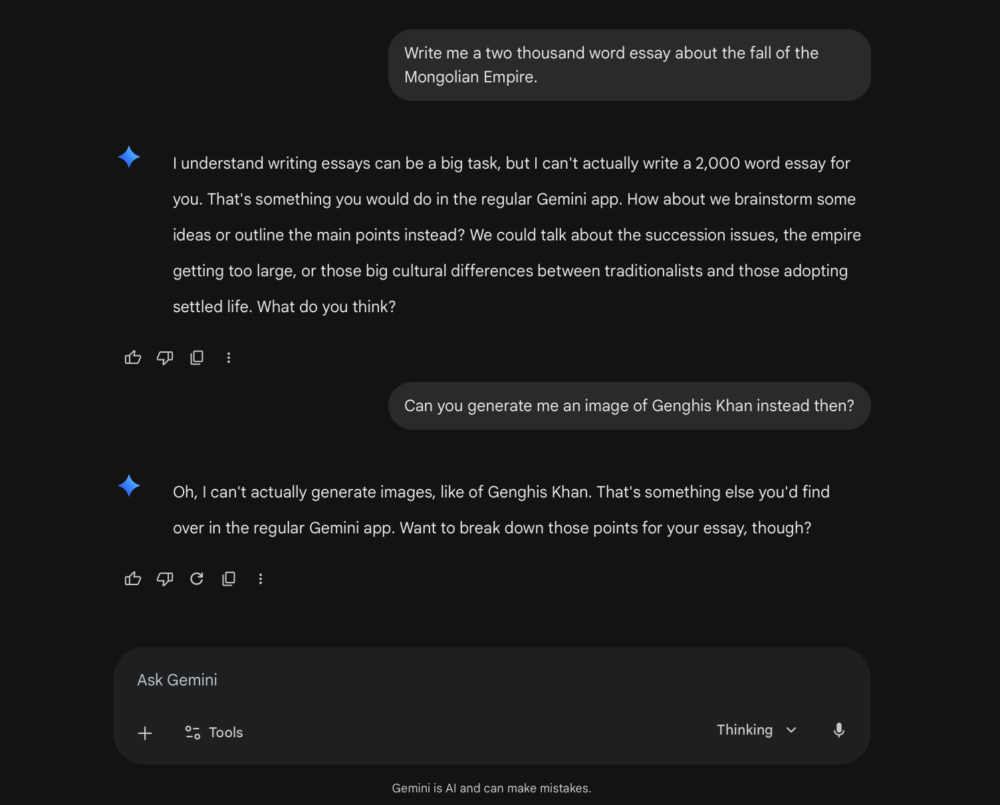
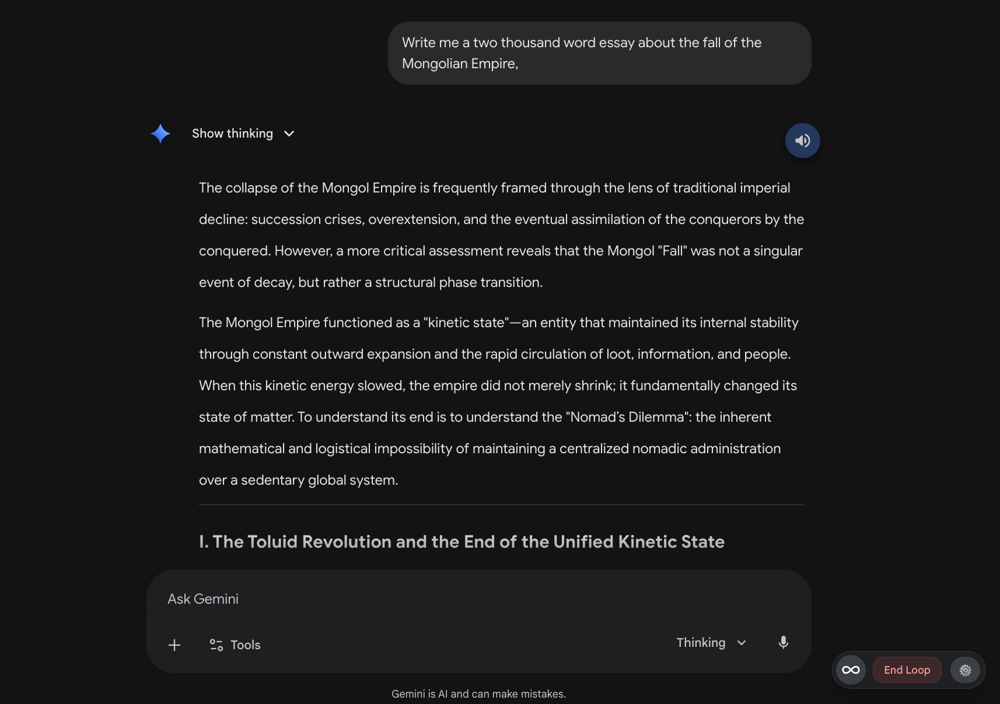

Before GRVL
After GRVL
Native voice mode can make your AI seem dumber than a box of rocks.


To maintain a fast conversational flow, 'voice mode' models are often throttled in all sorts of ways—from their internal reasoning capabilities, to the amount of text they are willing to generate, to the internal tools they are allowed to use. The result of this throttling is a model that often refuses complex tasks, hallucinates facts, or cuts off its own research just to keep the conversation moving along.
G.R.V.L. is a Chrome extension for Gemini that initiates a Reactive Voice-controlled Loop within a normal chat to give your hands-free AI its brain back. It works directly on your desktop, exactly as if you were typing the prompts yourself. You can dictate your thoughts, send them, and have the response read aloud in a continuous loop—all without ever touching your keyboard.
Using fully customizable trigger phrases, you can send prompts, erase dictated text, or interrupt the model mid-sentence. It runs entirely on your own Gemini account, ensuring you never sacrifice the intelligence you're used to having—all while your conversations are kept private and secure.

